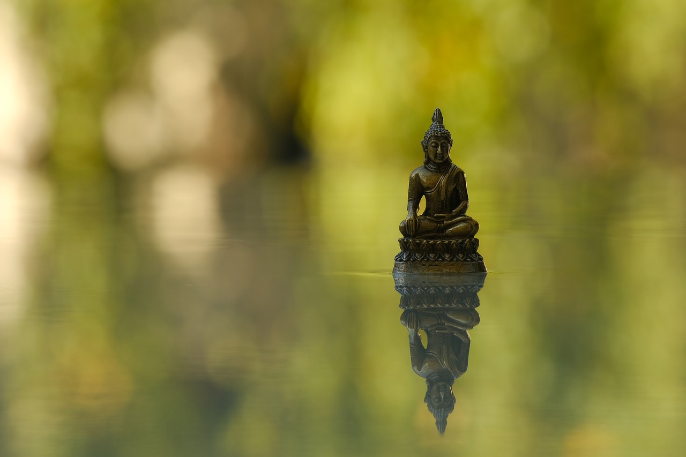

俱是夢中人
濟群法師
世人無知，不瞭解「有」是眾緣和合的，才會出現自性見和實在感。如果認識到「有」的緣起性，必能了知其本質為無自性，更非恆常、實在的「有」。
那麼，經典是如何詮釋「有」的呢？
在《金剛經》中，佛陀對有的實質作了精辟總結，那就是經中最為著名的偈頌：「一切有為法，如夢幻泡影，如露亦如電，應作如是觀。」
有為，指一切生滅、造作的現象。
如夢，即夢境般虛假。夢境不實是眾所周知的，夢中人卻執以為實，必待醒後方知真相。諸法如夢，虛妄不實，有情卻因無明之故，執以為實，待見道後大夢初醒，乃知諸法實相。
如幻，則是幻師以幻術變現的種種事物，如馬、車、房舍、人物等，雖無客觀實物，卻真切地出現於眼前，有色可見，有聲可聞。有的存在也是如此，雖空無自性，而假相宛然。
如泡，指水因含有空氣而出現氣泡，華而不實，瞬間即逝，以此形容諸法的遷流變化，剎那生滅。
如影，指物體在陽光下投射的影子，影由光而現，光線消失，影子隨之消失，以此形容諸法但隨緣現，緣散即無。
如露亦如電，同樣比喻諸法存在的短暫性。
應作如是觀，提醒我們以這一認識去看待「有」的一切。
在與《心經》《金剛經》同屬般若體系的《維摩詰經》中，維摩大士假示疾為大眾說「有」的真相：「是身如聚沫，不可撮摩；是身如泡，不得久立；是身如炎，從渴愛生；是身如芭蕉，中無有堅；是身如幻，從顛倒起；是身如夢，為虛妄見；是身如影，從業緣現；是身如響，屬諸因緣；是身如浮雲，須臾變滅；是身如電，念念不住。」這是從色身的生滅變化，說明有為法的無常，從而揭示存在的虛假性。